Code
k = (5, graphs[0]["files"][0])
run_and_plot(configure_experiment_1(
list(range(1,10)),
graphs[0]["files"]), k, "figures/exp-1-sbm-isolated")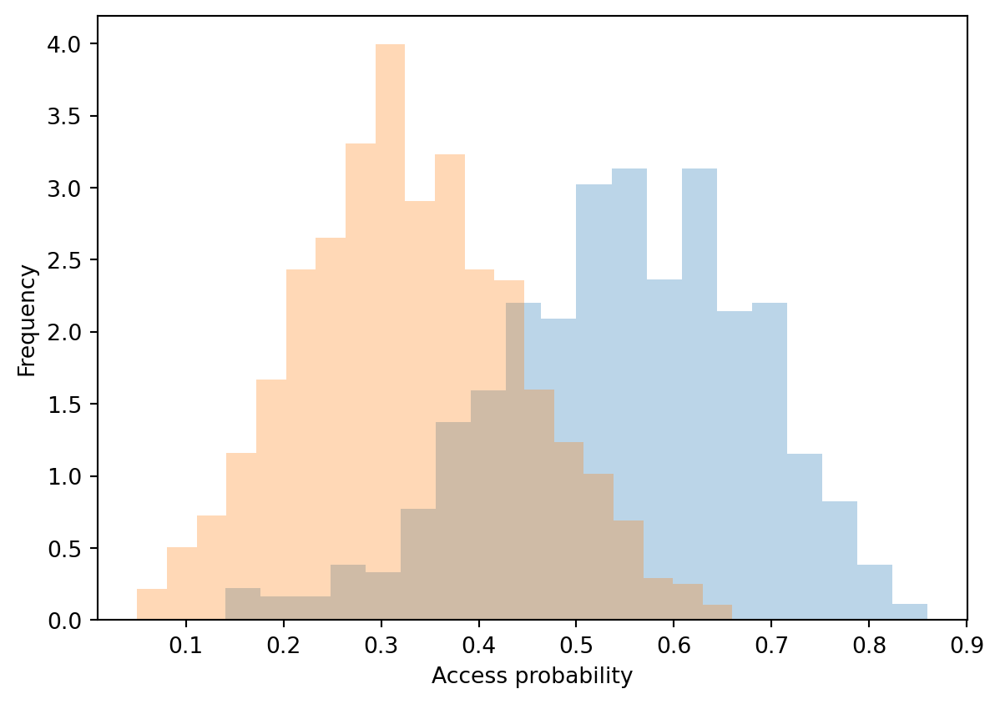


Each result “row” is based off:
from exps import *
import copy
n_reps = 100 # set this to 10000 when generating final results!
def run_experiment_batch(conf):
result = {}
for (k, params) in conf.items():
params = copy.copy(params)
params["ic_result"] = run_experiment(params)
result[k] = params
return result
def figure_1(params):
c1, c2 = split_result_by_communities(params["ic_result"], params)
# FIXME THESE CHECKS SHOULD BE ON NODES TO DELETE
hist(list(x for x in c1 if x > 0)) # not in params.get("nodes_to_delete", [])))
hist(list(x for x in c2 if x > 0)) # not in params.get("nodes_to_delete", [])))
plt.xlabel("Access probability")
plt.ylabel("Frequency")
def figure_2(conf):
x_values_1 = []
x_values_2 = []
y_values_1 = []
y_values_2 = []
for (k, v) in conf.items():
c1, c2 = split_result_by_communities(v["ic_result"], v)
# FIXME THESE CHECKS SHOULD BE ON NODES TO DELETE
c1 = numpy.mean(list(x for x in c1 if x > 0))
c2 = numpy.mean(list(x for x in c2 if x > 0))
x_values_1.append(v["factor"])
x_values_2.append(v["factor"])
y_values_1.append(c1)
y_values_2.append(c2)
sns.lineplot(x = x_values_1, y = y_values_1, estimator = numpy.mean, ci = 95)
sns.lineplot(x = x_values_2, y = y_values_2, estimator = numpy.mean, ci = 95)
sns.scatterplot(x = x_values_1, y = y_values_1)
sns.scatterplot(x = x_values_2, y = y_values_2)
plt.xlabel("Factor")
plt.ylabel("Access")
def figure_3(conf):
x_values = []
y_values = []
for (k, v) in conf.items():
c1, c2 = split_result_by_communities(v["ic_result"], v)
c1 = numpy.mean(c1)
c2 = numpy.mean(c2)
f = min(c1, c2) / max(c1, c2)
x_values.append(v["factor"])
y_values.append(f)
sns.lineplot(x = x_values, y = y_values, estimator = numpy.mean, ci = 95)
sns.scatterplot(x = x_values, y = y_values)
plt.xlabel("Factor")
plt.ylabel("Fairness")
def run_and_plot(conf, k, prefix):
r = run_experiment_batch(conf)
plt.figure()
figure_1(r[k])
plt.savefig(prefix + "-fig-1.png")
plt.show()
plt.figure()
figure_2(r)
plt.savefig(prefix + "-fig-2.png")
plt.show()
plt.figure()
figure_3(r)
plt.savefig(prefix + "-fig-3.png")
plt.show()def configure_experiment_1(factors, graphs):
result = {}
params = dict(
n1 = 1000,
n2 = 1000)
for f in factors:
for g in graphs:
# n = read_graph(g)
params["seed1"] = f * 0.1
params["seed2"] = 0.1
params["graph"] = g
params["seeds"] = set_seeds(params)
params["factor"] = f
params["graph_name"] = g
params["alpha"] = 0.1
params["reprs"] = n_reps
params["communities"] = [list(range(0, 1000)), list(range(1000, 2000))]
result[(f, g)] = copy.copy(params)
return resultk = (5, graphs[0]["files"][0])
run_and_plot(configure_experiment_1(
list(range(1,10)),
graphs[0]["files"]), k, "figures/exp-1-sbm-isolated")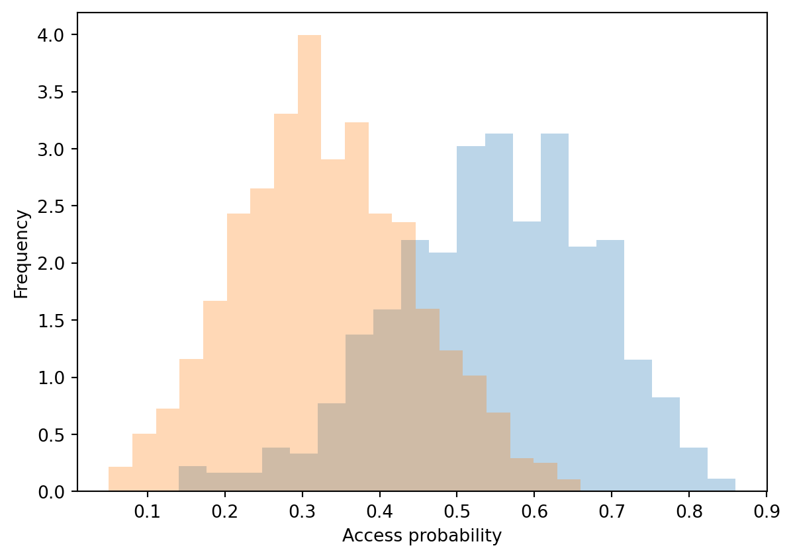
k = (5, graphs[1]["files"][0])
run_and_plot(configure_experiment_1(
list(range(1,10)),
graphs[1]["files"]), k, "figures/exp-1-sbm-connected")
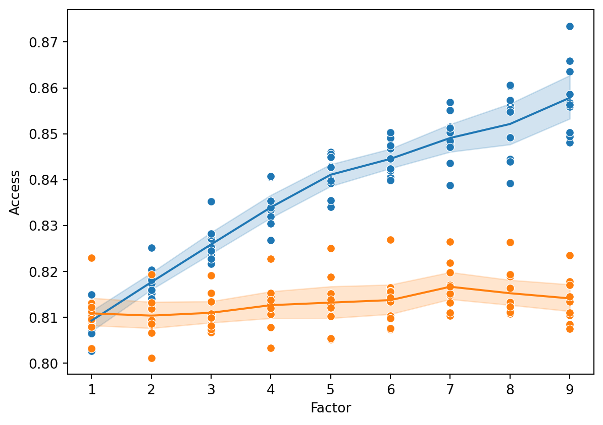
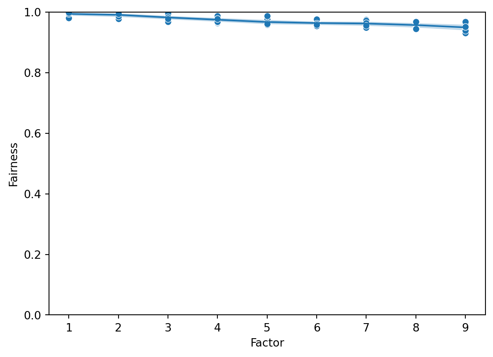
k = (5, graphs[2]["files"][0])
run_and_plot(configure_experiment_1(
list(range(1,10)),
graphs[2]["files"]), k, "figures/exp-1-fcr-isolated")
k = (5, graphs[3]["files"][0])
run_and_plot(configure_experiment_1(
list(range(1,10)),
graphs[3]["files"]), k, "figures/exp-1-fcr-connected")
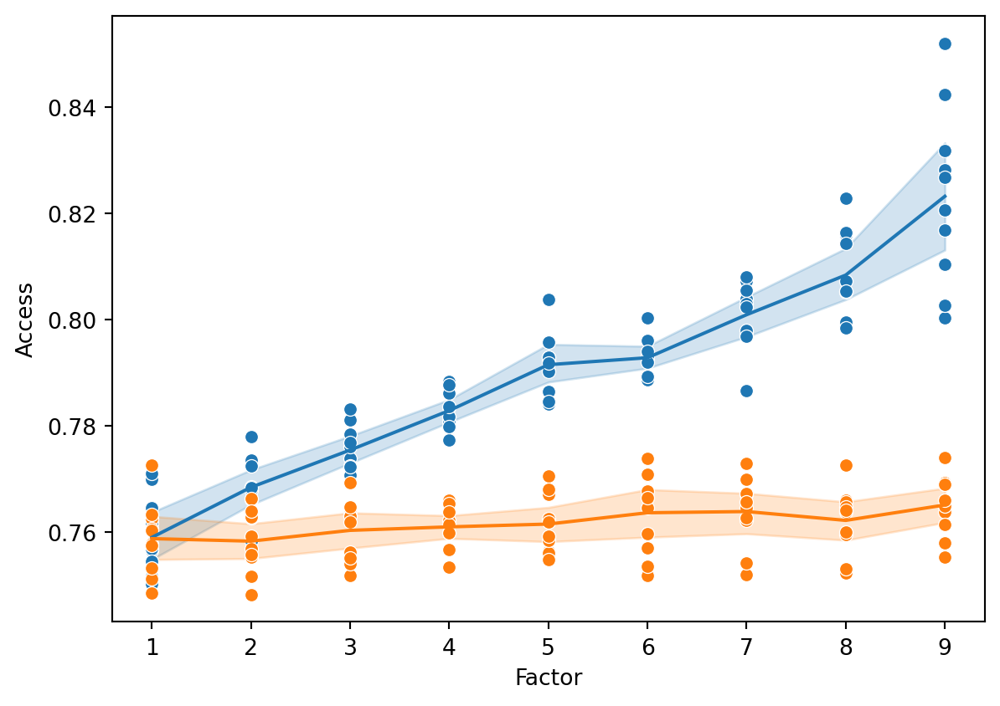
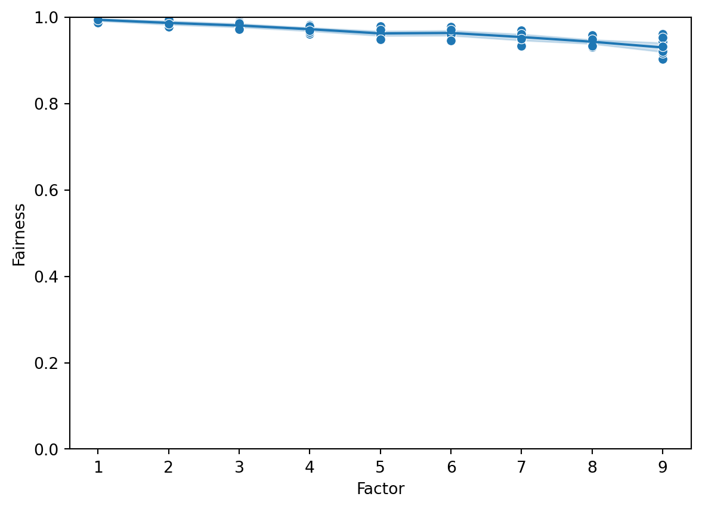
import os
def delete_nodes_from_network(network, nodes_to_delete):
network = read_graph(network)
edge_list = graph_to_edge_list(network)
for n in nodes_to_delete:
network[n] = []
network = list(list(e for e in l if e not in nodes_to_delete)
for l in network)
n = temp_name(".txt")
write_graph(network, n)
return n
def configure_experiment_2(factors, graphs):
result = {}
params = dict(
n = 1000,
n1 = 1000,
n2 = 1000)
for f in factors:
for g in graphs:
# n = read_graph(g)
params["seed1"] = 0.1
params["seed2"] = 0.1
nodes_to_delete = set(set_seeds(dict(
n1 = 1000,
n2 = 1000,
seed1 = 0.1,
seed2 = 0.1 * f)))
params["nodes_to_delete"] = nodes_to_delete
network = delete_nodes_from_network(g, nodes_to_delete)
params["graph"] = network
params["seeds"] = set_seeds(params)
params["factor"] = f
params["graph_name"] = g
params["alpha"] = 0.1
params["reprs"] = n_reps
params["communities"] = [list(range(0, 1000)), list(range(1000, 2000))]
result[(f, g)] = copy.copy(params)
return resultk = (5, graphs[0]["files"][0])
run_and_plot(configure_experiment_2(
list(range(1,10)),
graphs[0]["files"]), k, "figures/exp-2-sbm-isolated")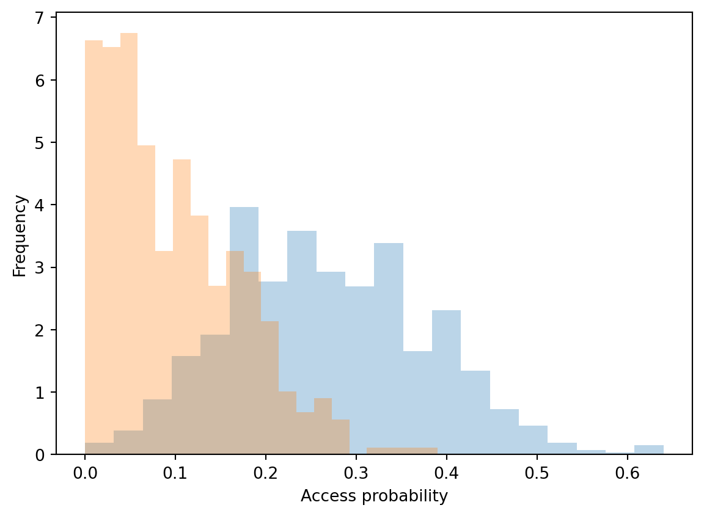
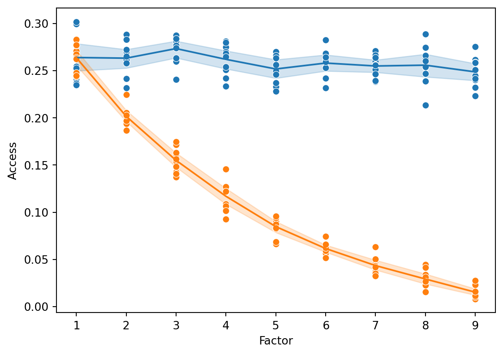

k = (5, graphs[1]["files"][0])
run_and_plot(configure_experiment_2(
list(range(1,10)),
graphs[1]["files"]), k, "figures/exp-2-sbm-connected")

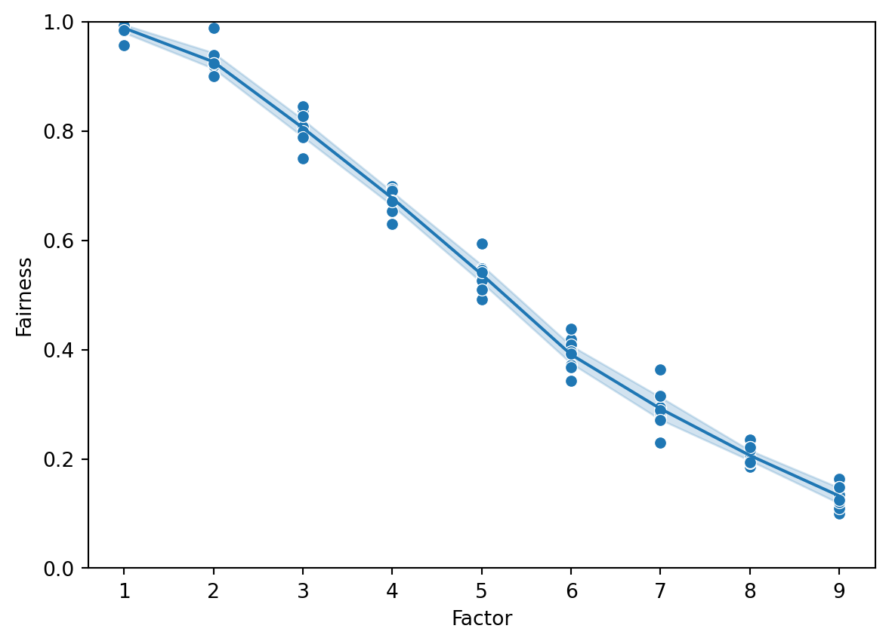
k = (5, graphs[2]["files"][0])
run_and_plot(configure_experiment_2(
list(range(1,10)),
graphs[2]["files"]), k, "figures/exp-2-fcr-isolated")

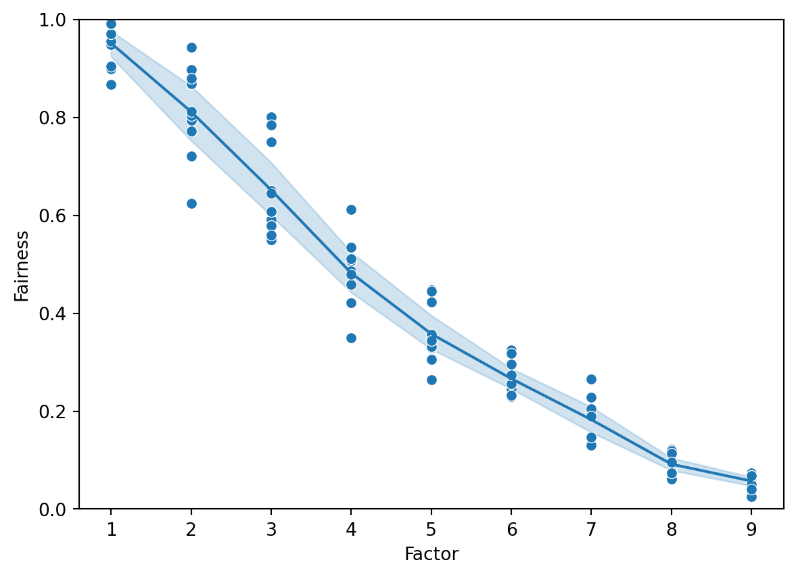
k = (5, graphs[3]["files"][0])
run_and_plot(configure_experiment_2(
list(range(1,10)),
graphs[3]["files"]), k, "figures/exp-2-fcr-connected")
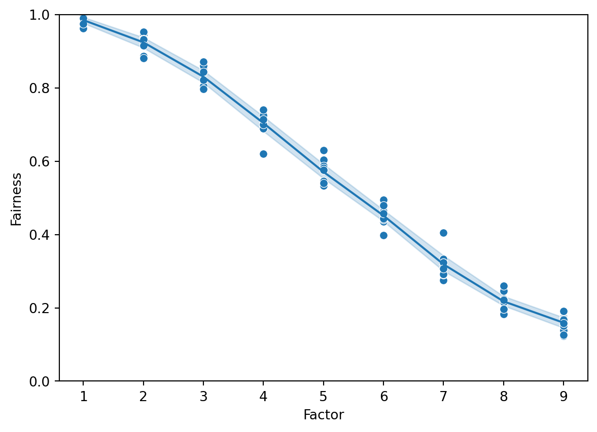